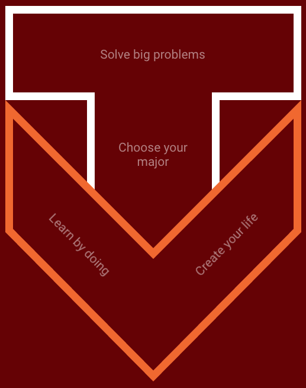

The Remix
Rip,Mix,Burn (Creativity and Innovation)
""Walt Disney creativity"a form of expression and genius that builds upon the culture around us and makes it something different."
Disney "ripped creativity from the culture around him, mixed that creativity with his own extraordinary talent, and then burned that mix into the soul of his culture. Rip, mix, and burn."
This type of innovation can be seen modeled by other people in other industries.
The Traditional T-shaped learner
INSERT A QUOTE HERE YO
The VT-shaped learner
The goal of the VT-shaped program is to, "move the campus toward a future in which researchers will work on big problems together in ways that emphasize collaboration over smaller, separate innovations."
"The capital T is the cross between a student’s disciplinary depth and trans-disciplinary knowledge and technological experience. The V connects those traits through informal communal and guided experiential learning."
"To create these kinds of learners, it may be useful to remember that, alongside invention, we need to find both inspiration and imagination."
"The program is intended to help undergraduates excel academically through disciplinary depth, interdisciplinary capacities, experiential learning, and a strong humanistic perspective."
How Liberal Arts and the VT-shaped learner connect
"The dynamic between science, technology, engineering, and mathematics (STEM) education and liberal education goes back to at least the Renaissance, a period that gave rise to both the modern university and the beliefs that provide the basis for modern science."
"Liberal education should not be antithetical or supplemental to practical education. Rather, we need both, if only because practical education is also necessarily transient, in the sense that the very qualities that make practical education most practical are rooted in the here and the now.""Technology alone is not enough—it’s technology married with liberal arts, married with the humanities, that yields us the results that make our heart sing."
"What important problem can be solved only by engineers who are trained only in engineering, or by poets who have mastered only poetry?"